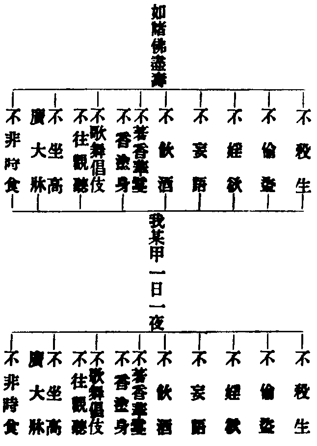

卍新纂大日本續藏經 第44冊
No.749 佛說齋經科註 (1卷)
【明 智旭科註】
第 1 卷
No. 749
佛說齋經科註
將釋此經兩番玄義一附文二跨節一附文者略如菩薩戒義疏先出三重玄義第一釋名第二出體第三料簡釋名者此據在家二眾弟子年三月六所受名為八關戒齋或開為九今合為八以不殺等名戒不非時食名齋而題獨稱齋者舉別以該總舉體以稱支也復次齋亦名戒佛所制故戒亦名齋齊三業故身齊則無穢惡口齊則無諸過心齊則無煩惱諸漏夫一日一夜秉志虔誠內以五念淨其志意外以八支束其身口三業道淨出世正軌此則因緣所生義也內不見有受齋之我外不見有授法之人中亦不得所受之法而一心修習不懈不退無有猶豫此則即空義也依此齋法遂有十界因果不同所謂或信不信或受不受或持或毀或著相受持或離相受持或但自為或為眾生或不究竟或令究竟此則即假義也一日一夜性非分劑八支五念體是法界能持所持若事若理當體絕待舉一全收故曰齋之為言齊也海印炳現橫徧豎窮更無一法而不周備乃名為齊此則即中義也欲令易解作此次第分別得意為語因緣即中空假亦然佛說及經具如常釋第二出體者正以不非時食而為齋體餘支助成葢生死正因無如婬欲生死增上勝緣無如飲食是故經云一切眾生皆依婬欲而正性命又云一切眾生皆依食住而在家五戒未能永捨家業眷屬緣累故令於六齋日受此八關戒齋一日一夜種未來世永出因緣以齋為體則簡下非終身五戒上非沙彌十戒據此所受一日一夜戒之與齋亦發一日一夜無作善色以從清旦秉受之後法爾止惡行善法爾出生無漏功德故也第三料簡者有六種人得受此齋謂菩薩近事男女若年三月六不受此齋得失意罪半滿諸戒及但三歸近事男女於年三月六應受此齋作出世因八部鬼神及畜生解語者亦得秉此齋法冀脫苦輪有九種人受不成齋謂受菩薩戒而根本破者及比丘比丘尼式叉摩那沙彌沙彌尼優婆塞優婆夷已破根本戒者及受此一日一夜齋法而破根本四重戒者皆不堪受或依大乘懺悔得見好相仍任更受也受此齋法須一出家人為作證明不問大小兩乘五眾但令畢世不非時食者便可為師設數里內決無其人或可對經像前自誓秉受耳。
二跨節者復為五重謂單法為名實相為體出世正因為宗生天泥洹為用置毒酪中為教相初法為名者所謂齋也齋是齊義心佛眾生三無差別故名為齊迷此一心上齊諸佛故殺盜婬妄飲酒嗜食躭染五塵不知慚愧迷此一心下齊含識故於平等法中生自他想起愛起見著我損人迷此一心全體中道故或犯事殺或犯理殺或犯事盜或犯理盜婬妄飲食華香樂座無不皆然致成十界因果差別今了知法性無染離五欲過隨順修行尸波羅蜜八支五念若事若理具足清淨遂令身口意業契會中道上合諸佛慈力下同眾生悲仰名之為齋文云盡一日一夜持心如真人乃至如清淨戒以一心習此之謂也次實相為體者原此一經出自阿含應同三印若無三印便成牧牛及尼犍齋繇有三印成佛法齋而今既秉法華開顯至教須知三印實惟一印以生死涅槃無二體故若歷法廣明者不殺戒護念一切體是無緣大慈不盜戒無所損惱體是無緣大悲不婬戒清淨無染體是離垢梵行不妄語戒正直誠信體即真如不飲酒戒心無放逸體即靈智不著香華戒離諸偽飾體是清淨莊嚴不歌儛戒寂諸喧掉體是禪那不好牀戒離憍慢意體是諸法空座不非時食戒中道之外更無所須體是究竟種智念佛者體即般若念法者體即法身念眾者體即解脫念戒者體是三聚亦即三德念天者體是第一義諦一日一夜體亘古今如此皆是實相異名故直以實相為正體也次出世正因為宗者世有三種一同居世間二方便世間三實報世間持即空齋是出同居正因持即假齋是出方便正因持即中齋是出實報正因也次生天泥洹為用者生天是近果泥洹是遠果復次有果報天淨天第一義天持此齋者悉得生之有圓淨泥洹方便淨泥洹性淨泥洹持此齋者終皆得之次置毒酪中為教相者如初為提謂說五戒法已多密悟無生法忍此胡不然況今行者秉法華意而受此齋安得不於齋中具佛性住秘藏耶是事可知無俟廣說也。
入文為三初序分二正宗分三流通分。
△初序分二初證信二發起今初。
聞如是一時佛在舍衛城東丞相家殿。
證信有五句一聞二法體三時四主五處所略無同聞凡受齋法或至僧伽藍中或請一師至自家中今即家中受也。
△二發起。
丞相母名維耶早起沐浴著綵衣與諸子媍俱出稽首佛足一面坐佛問維耶沐浴何早對曰欲與諸媍俱受齋戒。
在家二眾俱應受齋今丞相母為發起者女人役役家業秉受尤難舉難以顯易也又優婆塞受齋就寺為便優婆夷受齋就家為便維耶未見翻譯綵衣者在家常服既無妨於八支故不特制壞色若已受菩薩近事戒畜無縫三衣者於齋日應得著之。
佛言齋有三輩樂何等齋。
輩者類也齋法是同秖繇秉受心異遂成三別不可不審擇其所樂葢志樂愛見正法亦邪志樂大明福乃無極。
△二當機請。
維耶長跪言願聞何謂三齋。
△二正示二初列名二各釋今初。
佛言一為牧牛齋二為尼犍齋三為佛法齋。
依愛同於牧牛依見同於尼犍斷除愛見而修八支五念名為佛法也尼犍此云離繫外道之名。
△二各釋二初略釋二非二廣釋一是初中二初釋牧牛齋二釋尼犍齋初中三初標二釋三結今初。
牧牛齋者。
△二釋又二初喻二合今初。
喻此日雖從佛法受齋而不持心八支不習學五念乃懸想次日五欲猶如牧牛者懸想明日水草也例而推之今生奉持佛戒喜願未來人天受樂皆如牧牛。
△二合。
若族種男女已受齋戒意在居家利欲產業及念美飲食育養身者是為如彼牧牛人意。
△三結。
不得大福非大明。
夫一日一夜齋戒之法本是出世正因而心期五欲愛網自纏譬如以摩尼寶僅貿一衣一食故不得出世大福繇無出世大智光明廼使心期陋劣如此故結判云非大明也。
△二釋尼犍齋三初標二釋三結今初。
尼犍齋者。
△二釋又二初正釋二出過今初。
當月十五日齋之時伏地受齋戒為十由延內諸神拜言我今日齋不敢為惡不名有家彼我無親妻子奴婢非是我有我非其主。
為者向也由延亦云由旬四十里也向諸神拜不知歸向三寶故也然不敢為惡等雖不徧列八支大意亦與佛戒相似故下方正出其過。
△二出過。
夫既不名有家彼我無親則與佛法何異而僅稱尼犍齋者非但為其不知歸憑三寶良以其學貴文賤質無有正心故也貴文者致飾於外以圖悅人耳目賤質者不知真修實詣反本還源也直念真如名為正心不脫見網名無正心見惑既紆愛習仍在故至明日仍如故事也然外道所以貴文賤質無有正心者良繇不知三寶出世法門今雖歸憑三寶而不圖出要仍復貴文賤質當知同彼外道尼犍若細分之應作四句一者不歸三寶貴文賤質即真尼犍二者不歸三寶質直好義即此土儒宗秖因未逢三寶法門故不歸憑未有質直正心之士遇三寶而不歸者也三者歸向三寶質直正心即是真佛弟子四者雖歸三寶貴文賤質即是附佛法之外道以例推之受戒者貴彰持律之名而性遮諸業未必微細清淨演教者貴彰弘法之名而修證要途未必精徹明了參禪者貴彰機用之名而己躬下事未必窮源極底修懺者貴彰音聲儀式之名而事戒理觀未必深諳力行皆尼犍流類耳若約教論文論質及論正心則九界皆名尼犍。
△三結。
齋如彼者不得大福非大明。
謂雖受佛齋而如彼之貴文賤質無有正心則似置醍醐於毒器何能養人非出世福慧也。
△次廣釋一是三初標二釋三結今初。
佛法齋者。
道弟子月六齋之日受八戒。
道弟子謂在家秉承佛道之弟子也從但三歸至菩薩戒在家二眾俱得此名月六齋日者初八日十四日十五日二十三日二十九日三十日也若月小者取二十八日足之此六日是四天王及太子使者巡視世間之日受齋修福功倍餘時不言年三長齋月者月齋稍難容可隨力日齋最易尤應秉承年三月者正月五月九月毗沙門天王分鎮南洲亦應受齋修福也八戒具如下列或開香華歌僲為二則第九不非時食獨得齋名開合雖殊義體無別或者難曰為善去惡理應相續若但制六日則餘日便可為惡若餘日為惡待天神巡視而後修善不幾為小人之掩不善而著善乎君子視之已見肺肝謂天神而可欺乎答曰夫受六齋者非謂平日便可為惡也大戒五戒秉之終身八關戒齋加於六日譬如列國諸矦平日何嘗不修政布德士農工賈平日何嘗不勤職務業迨夫巡狩省試之期亦必倍加警飾故梵網有不敬好時之戒而善生經中亦制不受六齋得失意罪良有以也此為菩薩增上功德亦為近事種出世因下乃旁為一輩多罪眾生雖不能相續修善亦使之暫離惡業倘馴而致之萌孽漸生牛羊弗牧安知不蔚為牛山美木耶孔子曰有能一日用其力於仁矣乎吾未見力不足者又曰一日克己復禮天下歸仁焉一日齋戒亦如是矣縱令上根者少而日月至焉亦猶愈於晧亡不反者也故知如來立法普利三根或不遠而休復或頻厲而無咎或與進而不與其退與潔而不保其往顧受者自審何如耳。
第一戒者盡一日一夜持心如真人無有殺意慈念眾生不得賊害蝡動之類不加刀殺念欲利安莫復為殺如清淨戒以一心習。
釋此戒相各為三意一因緣二約教三觀心因緣釋者夫眾生習性各有所好喜長時者為說長時或盡形壽或盡未來喜短時者為說短時或一剎那一念一日七日一年等今言盡一日夜即是隨樂欲說夫八支淨戒雖則甚易亦復甚難盡一日夜則雖難而易不得半日及半夜等則雖易而難故以一日一夜而為分劑不減不增人可信受信受即皆歡喜世界悉檀也善法易成則善心必生為人悉檀也制有定限罔敢虧違則惡意必滅對治悉檀也涅槃名日生死名夜涅槃即生死名盡一日生死即涅槃名盡一夜日夜俱盡生死涅槃兩不可得則坐斷三世豁然入理第一義悉檀也持心如真人者阿羅漢翻無著亦翻不生亦翻應供亦翻應真今翻真人此乃出世聖果而持心如之以凡如聖人所樂聞世界悉也如聖成就善法即為人益如聖不作諸惡即對治益我如真人如一如無二如即入理益無有殺意者猶如真人永斷殺習此總標也慈念眾生別明行善不得賊害等別明止善念欲利安申明行善莫復為殺申明止善止行二善名為諸佛清淨之戒今以一心而修習之故得名為持心如真人也次約教釋者時無實法依於色心分位假立則有日月歲劫之殊日出名晝日沒名夜是中無我我所藏教意也日無出沒晝夜性空通教意也時既性空故可延一日以為永劫亦可促永劫以為一日令諸眾生各別知見別教意也十世古今始終不離當念一剎那性即是亘古亘今之性不見有法出於一日一夜之外名盡一日一夜圓教意也斷盡見思名為真人不殺生緣成生緣慈名清淨戒藏教意也見思如虗空不可得名為真人不殺法緣成法緣慈名清淨戒通教意也斷盡三惑名為真人不殺生緣不殺法緣不著我緣次第成就三慈名清淨戒別教意也三惑之性即三般若體惑成智名為真人不動佛性成無緣慈名清淨戒圓教意也三觀心釋者先觀心因緣夫長時短時悉惟是心心謂是長則短時亦長如黃梁未熟已過名闕心謂是短則長時亦短如斧柯已爛未終一局了知長短惟是自心則能隨意建立長短是觀心世界悟長非長故無量劫中習行諸度不生懈倦是觀心為人知短非短故剎那造罪殃墮無間不敢放逸是觀心對治長短皆是法界無復長短可論盡一日一夜即是盡生死涅槃之本際是觀心第一義也觀心本自可為真人發意如之是歡喜益成就善種三業似聖是生善益觀心遠離垢穢不與聖違是滅惡益觀心成就聖道實無聖道可得是入理益次觀心約教者觀心無我我所時劫亦然愛見則斷如於真人藏教意也觀心猶如虗空性不可得時劫愛見皆同虗空如於真人通教意也觀心假名無量時劫差別亦復無量智斷證得亦復無量如於真人別教意也觀心絕待體是法界時劫惑智無非法界如於真人圓教意也觀一念心具足半滿權實諸法無欠無餘安得不約觀解申此八支五念之實義耶。
△第二盜戒。
第二戒者盡一日一夜持心如真人無貪取意思念布施當歡喜與自手與潔淨與恭敬與不望與却慳貪意如清淨戒以一心習。
三釋例前可解下皆倣此無貪取意先明止善思念布施等次明行善歡喜等四句具四悉意歡喜即世界自手即為人生他善故潔淨即對治遠離惡故恭敬即第一義觀生如佛故次不望句即行論止謂與時無有望今報後報心也歡喜四句是却慳心不望與句是却貪心慳財慳法貪有貪空貪二邊貪中道等悉皆却除是名諸佛清淨之戒。
△第三婬戒。
第三戒者一日一夜持心如真人無婬意不念房室修治梵行不為邪欲心不貪色如清淨戒以一心習。
無婬意二句先明止善修治梵行次明行善梵行者四禪四等也不為邪欲二句重明止善婬名貪染染男女染味禪染偏真染幻有染但中諸意悉無名無婬意人間房室色無色界房室有餘房室果報房室皆悉不念名為不念房室知禪即空即假即中成就生緣法緣無緣慈等名為修治梵行心外取法皆名邪欲九界善惡漏無漏法皆名為色一切不貪名清淨戒也。
△第四妄語戒。
第四戒者一日一夜持心如真人無妄語意思念至誠安定徐言不為偽詐心口相應如清淨戒以一心習。
無妄語意總標永離四過思念至誠即無未得言得諸愆安定即不綺語徐言即不惡口不為偽詐即不兩舌心口相應即不妄言皆含止行二善之意可以思得。
△第五飲酒戒。
第五戒者一日一夜持心如真人不飲酒不醉不迷亂不失志去放逸意如清淨戒以一心習。
不飲酒句總標離眾失也醉及迷亂皆飲酒必招之過失志放逸則飲酒之流類也充類至盡於三土六塵咸無放逸方名清淨戒耳。
△第六香華歌儛戒。
第六戒者一日一夜持心如真人無求安意不著香華不傅脂粉不為歌儛倡樂如清淨戒以一心習。
色聲香觸等塵乃六情諸根所安今關閉六情專求出要故不著不傳不為也例而推之迦葉聞琴起舞猶是界外思惑未除必三土香華歌儛皆悉不著不為方名清淨佛戒。
△第七高廣大牀戒。
第七戒者一日一夜持心如真人無求安意不臥好牀卑牀草席捐除睡臥思念經道如清淨戒以一心習。
高廣嚴飾名為好牀縱恣睡眠小死無異今捐除睡臥即是止善思念經道即是行善以例推之有法可倚可著皆名牀臥證諸法空無住為住斯名清淨戒矣。
△第八非時食戒。
第八戒者一日一夜持心如真人奉法時食食少節身過中日後不復食如清淨戒以一心習。
此正名齋例須三釋初因緣者佛真法身非俟食養應身同人示資飲食日輪當午慈哀受供十方善逝咸然三世如來一轍順諸佛法人所樂聞世界悉也以時受食資身辨道身無病苦心得安間為人悉也離舌端貪嗜之過無數數營理之煩減食節身婬意漸薄對治悉也日中以表中道中道之外更無所需第一義悉也約教者隨界隨洲用人間法一線若過禁不復咽藏教意也時雖本空如幻分別午食尚無味著過中豈更貪求了即空故不起犯心通教意也依破齋故出生三惡趣果依持齋故出生善道及三乘果誓以此齋自利利他上求下化莊嚴中道趣會極果別教意也中道即是法界一止一作亦皆法界午前而食願令法界眾生咸得契會中道午後不食願令法界眾生永不迷背中道繫緣法界一念法界圓教意也觀心者根塵相對皆有食義如眼以睡為食耳以聲為食等若墮聰黜明便成斷滅見網若尋聲逐色又復流浪愛河今云時食則但緣現量復云少食則無所貪求既不永乖物情亦不令他憎惡即觀心世界法食資神即觀心為人斷非法食即觀心對治契會中道即觀心第一義也六塵無我我所非斷非常名為中道心不緣斷常非法之食名不過中藏教觀也六塵性空如幻非有非無名為中道心不緣有無二邊之食名不過中通教觀也六塵各各互生諸法具造十界而性非十界逈出二邊名為中道心不取生死涅槃二諦之食名不過中別教觀也六塵體即法界具足百界千如隨舉一塵一切法咸趣此塵是趣不過不於此一塵外別有少法可得名不過中如一塵一切諸塵亦復如是如一切塵一切諸心諸法諸假名等亦復如是無不當體即中不見有法出過於中名不過中圓教觀也如此諸觀皆依不非時食而為事境若無事境理觀不發故荊溪云世人蔑事而欲尚深理者驗知此觀孤虗無本既虧觀境觀亦安從噫可以思矣。
△次五念二初標徵二解釋今初。
佛告維耶受齋之日當習五念何謂五。
一當念佛佛為如來為至真為等正覺為明行足為善逝世間父無上士經法御天人師號曰佛。
示念境中略明十號若知十號功德則知佛位一切高廣功德亦須略以三釋明之初因緣者如世間聖賢亦多嘉號聰明睿智神聖英哲等如天帝釋有千名字隨德立號令眾樂聞廣則具如雜華名號品今略舉通號十種以彰具德世界悉也若聞如來十號能生世出世間種種善根為人悉也十號威德能令聞者破狹劣心破輕慢心敬仰畏憚不敢萌於惡意對治悉也一一名號實義相應聞名識義不復遠求第一義悉也梵語多陀阿伽度此翻如來若云無所從來亦無所去故名如來即約法身釋也若云如法自性來成正覺即約報身釋也若云乘如實道來度眾生即約化身釋也梵語阿羅訶此翻應供亦翻應真今翻至真為世福田故名應供冥自真性故名至真繇冥真故堪作世祐也梵語三藐三佛陀此翻正徧知今翻等正覺等即徧義具明差別法門名之為等此異二乘深知無差別性名之為正此異凡外也具足三明為明行足妙超三有名為善逝世間父亦名世間解自己解脫能解世間如長者自出火宅能令諸子出火宅也一生補處猶為有上位極妙覺更無過者名無上士經法御亦名調御丈夫具丈夫法乃能說經調御眾生也六道以天人為勝又三乘聖眾皆在人道天中佛為天人師範即九界同秉教誨也自覺覺他覺行圓滿故號曰佛不言世尊者十號具足即是世間最尊舉別而略總也次約教者偏真無去來相證於偏真以此度生為如來等知世間諸法正知出世涅槃為等正覺具知過現未來為明行足超脫三有名善逝脫六凡之縛為世間父在四果支佛之上為無上士說九部十一部十二部經詮生滅理調御眾生為經法御同居之導為天人師自覺偏真亦以偏真覺他二覺皆滿名佛此藏教義也生死即真空涅槃故無來去證於即空以此度生為如來真不異俗故等俗不異真故正為等正覺觀過未現在性空寂滅不可得為明行足即三有而不著三有為善逝解脫六凡二乘之縛為世間父在三乘九地之上為無上士說十二部經詮無生理調御眾生為經法御同居方便之導為天人師自覺即真亦以即真覺他二覺皆滿名佛此通教義也中道逈出二諦故無來去證於中道以此度生為如來等知二諦正知中諦為等正覺極過去際盡現在際窮未來際悉見悉知為明行足次第超出同居方便實報三種國土為善逝解脫六凡三乘之縛為世間父在十地等覺之上為無上士說十二部經詮無量理調御眾生為經法御同居方便實報之導為天人師自覺三諦亦以三諦覺他二覺皆滿名佛此別教義也中道徧一切法故無來去證於圓中以此度生為如來覺第一義諦即二諦名等覺二諦即第一義諦名正為等正覺十世古今始終不離當念皆入三世而無往來於剎那際三昧中示現劫海成菩提事八相之中復具八相不可思議為明行足三種國土無非寂光為善逝解脫十界苦集為世間父在四十一位法身之上為無上士說十二部經詮無作理調御眾生為經法御四土之導為天人師自覺不思議一實諦二諦三諦四諦亦以覺他二覺皆滿名佛此圓教義也觀心釋者觀此現前一念之心不在內外中間諸處非有青黃長短等相去來現在求不可得而了了明明數數生起是為如來此心既無方隅相貌過現未來則本無幻妄是為至真此心徧知一切諸法無有一法可喻此心為等正覺此心無始無終亦無邊際為明行足此心徧造十界而終日隨緣終日不變是為善逝此心不被十界之法所縛而能出生十界諸法為世間父此心能等一切諸法而無一法能等此心為無上士此心具足覺觀語言之道一心曉訓餘心心所為經法御此心能天能人而非天人之所能為為天人師此心法爾靈知不昧覺了自他無有不盡故號曰佛初觀此心具足十號上等諸佛慶己慶他即世界益觀心具足十號成就善根功德即為人益觀心具足十號破壞見愛無知無明即對治益觀心具足十號一具足一切具足究竟平等不減不增即第一義益約因緣所生法觀則此心具足藏教十號約即空觀此心具通十號約即假觀此心具別十號約即中觀此心具圓十號也。
△二明念益三初正明二喻顯三法合今初。
是念佛者愚癡惡意怒習悉除善心自生思樂佛業。
佛既有四教三身十號之不同念亦有四教念自念他雙念自他之差別若欲委知具如大佛頂經勢至圓通文句(云云)愚癡惡意怒習悉除即是止善善心自生思樂佛業即是行善於止善中略舉破壞三毒言惡意者即是貪染五欲之毒三毒有正有習正習悉除所謂千年闇室一燈能破也念法門能除愚癡念實相能除惡意念相好能除怒習此猶對當為語盡理言之念念皆除三毒正習於行善中善通因果佛惟在果言善心自生者生離欲心生出世心生下化心生上求心生究竟無上種智之心言思樂佛業者三聚淨戒是佛業百八三昧是佛業三智五眼是佛業大慈大悲大喜大捨是佛業安住真如是佛業同流九界是佛業誘化一切是佛業依藏教念自佛念他佛念自他佛除同居三毒正習生離欲及出世心思樂藏教果佛種種妙業依通教三種念佛除同居方便三毒止習生出世及下化心思樂通佛妙業依別教三種念佛除同居方便實報三毒正習生下化及上求心思樂別佛妙業依圓教三種念佛除四土三毒正習生究竟無上種智之心思樂圓佛妙業問寂光那有三毒正習答此約分證寂光言也此文亦具四悉檀意念佛即世界三毒除即對治善心生即為人樂佛業即第一義也。
△二喻顯。
譬如以麻油澡豆沐頭垢濁得除。
麻油澡豆除穢之物喻四教念慧皆除惑之具也依於一體三寶而有住持三寶於三寶中佛寶最尊喻之以頭當知住持佛寶即吾自體佛寶也垢濁既除頭則清淨念佛功成佛性顯現矣。
△三法合。
齋念佛者其淨如是眾人見之莫不信好。
繇受齋故念佛繇念佛得成齋自淨即令眾人信好可見自利為他之本所以君子求諸己也。
△二念法二初示念境二明念益今初。
佛法無量而三十七品具足始終修證途轍故獨舉之分為七科一四念處謂身受心法為所觀境二四正勤謂繇念處觀令未生惡不生已生惡除滅未生善得生已生善增長三四如意足謂欲念進慧於中思惟則定思惟則斷善能成就神通四五根謂信進念定慧成無漏根五五力亦如根名謂信等增長能破五障六七覺支謂念擇法精進喜輕安定捨調攝其心不沉不浮而入見道七八正道謂正見正思惟正語正業正精進正定正念正命安隱在道中行此三十七品四教名數皆同而觀慧各異復各有豎入橫具之不同此能運載三土眾生到三涅槃故為三世間明所應具足不毀思念勿忘也。
△二明念益三初正明二喻顯三法合今初。
是念法者愚癡惡意怒習悉除善心自生用樂法業。
念四教法除四土三毒正習等例前可解。
△二喻顯。
譬如以麻油澡豆浴身垢濁得除。
受齋則以法為身故即以身喻法昧此法身性本清淨幻成三惑垢濁垢濁既除法身顯矣。
△三法合。
齋念法者其淨如是眾人見之莫不好信。
△三念僧二初示念境二明念益今初。
三當念眾恭敬親附依受慧教佛弟子眾有得溝港受溝港證者有得頻來受頻來證者有得不還受不還證者有得應真受應真證者是為四雙之八輩丈夫皆為戒成定成慧成度知見成為聖德為行具當為叉手天上天下尊者福田。
梵語僧伽此翻和合眾今但言眾者以四雙八輩法爾具足事理二和故也律中明僧有四種一無慚僧謂破戒者二啞羊僧雖不破戒昧法律者三清淨僧謂內外七賢及持戒凡夫四真實僧謂四雙八輩今令念真實僧故言恭敬親附依受慧教也恭敬約意親近約身受教約口十六心滿初登聖位名得溝港猶云預流即須陀洹果八忍具足智少一分名受溝港證者謂無間必當證溝港道即須陀洹向斷欲界思六品名得頻來猶云一往一來即斯陀含果斷五品時名受頻來證者即斯陀含向斷欲界九品思盡名得不還猶云不來即阿那含果斷八品時名受不還證者即阿那含向斷三界惑盡名得應真謂與真諦常相應故即阿羅漢果進斷非非想思名受應真證者即阿羅漢向合為四雙分為八輩輩者類也具足智斷故名丈夫性遮清淨無作體不可壞名為戒成八解九次第等名為定成見四真諦名為慧成於有為諸行得解脫名為度成文缺度成二字分別解脫因果不謬名為度知見成具慧行入正位名為聖德具行行滿足功德名為行具以要言之前三果及四向是分證五分法身阿羅漢果是滿證五分法身也當為叉手結成能念舉叉手以攝三業天上天下尊者福田結成所念舉福田以顯德行也然在家菩薩受齋念眾於真實僧固應三業精勤於清淨僧亦應禮拜供養即啞羊及無慚僧尤不應輕慢毀辱如象王羅剎尚敬服袈裟者不害不食何況歸依三寶自稱近事淨行者乎十輪明訓昭若日星投鼠忌器世法可喻思之慎之又此四雙五分且約藏教為釋衍門則觀慧雖殊斷證無別別圓須約界外見思法性五陰以辨人法故知言雖在小義實該大又觀心僧寶者此心本非色聲香味觸法名須陀洹此心剎那生滅名斯陀含此心滅已無朕名阿那含此心四性不生名阿羅漢此心性無染汙為戒成此心性不動搖為定成此心性不可昧為慧成此心性非有為名度成此心徧知有為無為諸法名度知見成乃至歷四教明觀可以意得。
△二明念益三初正明二喻顯三法合今初。
是念眾愚癡惡意怒習悉除喜心自生樂眾之業。
喜心即善心也餘例前可知。
△二喻顯。
譬如以淳灰浣衣垢污得除。
淳灰亦譬四教念慧僧寶屬解脫德故以衣譬即所謂解脫服也又是慚愧莊嚴又是寂滅上忍性具僧寶如身必有衣念慧除垢則解脫清淨眾德莊嚴柔和善順矣。
△三法合。
齋念眾者其德如是眾人見之莫不好信。
△四念戒二初示念境二明念益今初。
四者念戒身受佛戒一心奉持不虧不犯不動不忘善立慎護為慧者舉後無所悔不以有望能等教人。
佛戒有七眾九眾大小兩門之不同今云身受佛戒且據一日一夜所秉八支而言即此八支戒法具攝定共道共及三聚五支等戒故總誡云一心奉持也不虧不犯即木叉戒不動即定共戒不忘即道共戒又不虧不犯不動即攝律儀戒不忘乃至後無所悔即攝善法戒不以有望能等教人即攝眾生戒又不虧謂護持四重根本無虧即根本業清淨戒不犯謂其餘四支及根本之等流方便皆悉無犯即前後眷屬餘清淨戒不動謂不被欲界麤獘五塵所動即非諸惡覺覺清淨戒不忘謂正念現前故能善自安立謹慎護持設為有智慧者之所舉問如說能行如行能說後無所悔即護持正念念清淨戒不以有望謂不為自求人天福報聲聞緣覺權乘諸位能等教人謂惟依最上乘發菩提心願與法界眾生一時同得無上菩提即迴向具足無上道戒秪此一日一夜八關戒齋為所緣境於中具足定共道共三聚五支無欠無餘則為具足一切恒沙佛法無量功德之藏齋戒為法界一切法趣齋戒是趣不過是名為念戒也一日一夜齋戒橫豎包羅尚自如此況終身五戒況沙彌戒況比丘戒耶而世之蔑視戒律別求圓妙者不思甚矣。
△二明念益三初正明二喻顯二法合今初。
是念戒者愚癡惡意怒習悉除喜心自生樂戒統業。
住持三寶繇戒而存一體三寶繇戒而證故華嚴云具足受持威儀戒法能令三寶種性不斷所以名統業也。
△二喻顯。
如鏡之磨垢除盛明。
一體三寶佛為首法為身僧為衣惟戒能炤見之故戒本云如人自炤鏡好醜生欣慼又云戒如真寶鏡炤法盡無遺。
△三法合。
齋念戒者其淨如是眾人見之莫不好信。
△五念天二初示念境二明念益今初。
五當念天第一四天王第二忉利天鹽天兜術天不憍樂天化應聲天當自念義以有信有戒有聞有施有智。
果報自然無所造作名之為天四天王謂東方持國南方增長西方廣目北方多聞守護四天下者居須彌山埵離地四萬由旬忉利天此翻三十三天居須彌山頂四方各八天中為帝釋統御四洲離地八萬由旬鹽天亦云燄天亦云須夜摩天此翻時分謂日月光明上炤不及身自有光以蓮華開合而為晝夜故離地十六萬由旬於虗空中有地如雲朗然安住兜術天亦云兜率亦云覩史此翻知足謂於五欲皆知止足故離地三十二萬由旬不憍樂亦云化樂謂隨意化諸樂境而無憍縱離地六十四萬由旬化應聲天亦云他化自在謂所受樂境不假作意但任運應現故離地一百二十八萬由旬不言色無色界者且據一日一夜齋戒功德能感此等六天果報故就近而略明之此是念果次我以有信等則是念因繇信三寶及戒故受持齋法不毀故聞此大明法門故能以功德普為眾生故正慧了了不顛倒故得生此六天中受勝妙樂漸次得涅槃也六天近在欲界人所樂聞即世界悉聞六天果必植善因即為人悉畏天視聽不敢為惡即對治悉知天無常發得苦智無漏真明即第一義悉同居六天因緣生法義屬藏教方便淨天即空一句義屬通教實報義天次第證入義屬別教寂光大涅槃天當體即中義屬圓教信法生滅信法無生信法無量信法無作是有四教信持性遮戒持真諦戒持俗諦戒持中道戒是有四教戒聞生滅詮聞無生詮聞無量詮聞無作詮是有四教聞捨有為法捨偏空證捨二邊著捨中道愛是有四教施析法智體法智次第三智一心三智是有四教智觀心者一切世界依心建立名持國一切諸法繇心出生名增長一切法界一心徧見名廣目一切法門一心普達名多聞一心具足王所功德名忉利一心生死涅槃以為晝夜名鹽天不於心外取法名兜術一心具足法樂而無放逸名不憍樂一心隨意轉變而於常樂我淨四德無減名化應聲自心起信還信自心名有信隨順無染法性名有戒能觀心性具足佛法名有聞不於心外取三世法名有施知心即空假中名有智復次五念法門諸經多明六念今以念施攝入念天又此念天法門阿含明念六天謂念繇十善故生天天亦苦空無常無我多是藏教意也華嚴明念兜率天上一生補處大士功德多是別教意也涅槃明念第一義天多是圓教意也今經事同阿含而因緣事境徧為一切理觀作本安得不深求之。
△二明念益三初正明二喻顯三法合今初。
是念天者愚癡惡意怒習悉除喜心自生樂天統業。
華嚴明十善為五乘作根本所以天業統一切也。
△二喻顯。
譬如寶珠常治清明。
約福德莊嚴以明天業故如寶珠寶珠十種瑩治則能四洲雨寶天業數數習念能助三乘出世善根。
△三法合。
齋念天者其淨如是。
△三結三初正結二顯勝三勸持今初。
奉持八戒習五思念為佛法齋。
△二顯勝。
與天參德滅惡興善後生天上終得泥洹。
△三勸持。
是以智者自力行出心作福。
不墮愛見名為智者不倚他人名自力行內外一如名出心作福若不力行便同牧牛若不出心便是貴文賤質同彼尼犍智者幸審思之正宗分竟。
△三流通分二初顯示福報二信受奉行初中二初顯福勝二示報優今初。
如是維耶齋之福祐明譽廣遠譬是天下十六大國是十六國滿中眾寶不可稱數不如一日受佛法齋如比其福者則十六國為一豆耳。
此文缺略應云是十六國滿中眾寶以用布施所得福德不如一日受齋福德葢珍寶布施秖是後世福樂之因一日夜齋決為出世之因又珍寶秖是財施齋戒具足法施無畏施故。
△二示報優二初出果相二明因相今初。
天上廣遠不可稱說當今人間五十歲為第一天上一日一夜第一四天上壽五百歲彼人間九百萬歲佛法齋者得生此天上。
天上廣遠不可稱說總標六天報勝也先出第一四王天相略舉壽命長遠以顯福盛餘經明上品十善得生此天正法念處經明不殺功德得生此天今明佛法齋得生此天十善是輪王世間正法不殺是一分優婆塞終身之戒佛法齋是一日一夜精進功德皆得感此果報而齋法果報則不止此具如下文所明。
餘經明上品十善增上得生此天正法念處經明不殺不盜功德得生此天今亦明佛法齋得生也。
人間二百歲為鹽天上一日一夜鹽天壽二千歲當人間一億五千二百萬歲。
餘經明上品十善兼學坐禪得生此天正法念處經明不殺不盜不邪婬功德得生此天今亦齋法得生應云一萬萬零四千四百萬歲恐譯者不善方言數目或復傳寫之悞。
人間四百歲為兜術天上一日一夜兜術天壽四千歲當人間六億八百萬歲。
餘經明上品十善兼坐禪得欲界細住乃生此天正法念處經明身三口四功德得生此天今亦齋法得生應云五萬萬零七千六百萬歲。
人間八百歲為不憍樂天上一日一夜不憍樂天壽八千歲當人間二十三億四千萬歲。
餘經明上品十善兼修未到地定乃生此天今亦齋法得生應云二十三萬萬零四百萬歲。
人間千六百年為化應聲天上一日一夜化應天壽萬六千歲當人間九十二億一千六百萬歲。
餘經明上品十善兼得未到地定乃生此天今亦齋法得生應云九十二萬萬零一千六百萬歲。
△二明因相。
若人有信有戒有聞有施有智奉佛法齋當命盡時其人精神皆生此六天上安隱快樂猗善眾多我少說耳凡人行善魂神上天受福無量。
猗輕安也餘如前釋。
△二信受奉行二初當機奉行二大眾信受今初。
維耶聞佛語歡喜言善哉善哉世尊齋之福德甚快無量願受佛戒從今以後月六齋日竭力作福至死。
△二大眾信受。
佛說經已皆歡喜受教。
能說人清淨故歡喜佛法度生而說永無名利想故所說法清淨故歡喜出世正真要門不同愛見論故聞法獲勝益故歡喜現在福樂後生善處終得大泥洹故。
佛說齋經科註(終)
(諸經論中皆明八關齋法葢以一往判釋則五戒乃人天因此一日夜戒齋方為出世因也無論已受五戒未受五戒乃至受菩薩優婆塞戒者皆可隨意受持或六齋日或生日諱日等並應發心秉受)
(本經雖合為八支而秉受時仍作九支陳說無過葢文有開合義無增減故也此依毗婆沙等以易於秉白故)。
我某甲歸依佛歸依法歸依僧一日一夜為淨行優婆(塞夷)如來至真等正覺是我世尊(三說如或不能師應教授)我某甲歸依佛竟歸依法竟歸依僧竟一日一夜為淨行優婆(塞夷)如來至真等正覺是我世尊(三說次應教受戒法)。

我今以此八關戒齋功德四恩總報三有齊資普與眾生同生淨土(前之八支名戒不非時食為齋故名八關戒齋)。
薩婆多毗婆沙云受八齊法應言一日一夜不殺生令語言決絕莫使與終身戒相亂佛本制一日一夜不得過限若有力能受一日過已次第更受隨力多少不計日數也夫受齋法必從他受於五眾邊。
優婆塞戒經云若先遣信欲刑戮人信遲未至其人尋後發心受齋當受齋時信至即殺雖後一時以戒刀故不得殺罪若諸貴人常勅作惡若欲受齋先當敕語遮先諸惡乃得成就若先不遮輒便受齋者不名得齋欲受齋者先當宣令所屬國境我欲受齋凡是齋日悉斷諸惡罰戮之事。